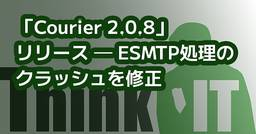
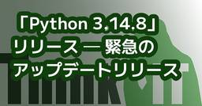
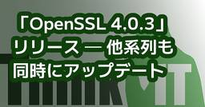
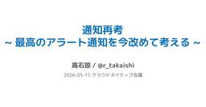
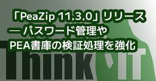
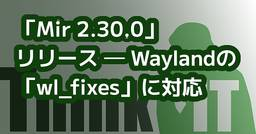

Think IT（シンクイット）
https://thinkit.co.jp/
【Think IT】“オープンソース技術の実践活用メディア” をスローガンに、インプレスグループが運営するエンジニアのための技術解説サイト。開発の現場で役立つノウハウ記事を毎日公開しています。
フィード

「Apache HTTP Server 2.4.69」リリース ─ 20件の脆弱性を修正
Think IT（シンクイット）
「Apache HTTP Server 2.4.69」リリース ─ 20件の脆弱性を修正 mod_vhost_aliasのバッファーオーバーフローやmod_http2のuse-after-freeなどに対応kawahara2026年10月3日シェア ポスト はてブ 優先するニュース提供元に追加 Apache Software Foundationは10月1日(現地時間)、オープンソースのWebサーバー「Apache HTTP Server 2.4.69」をリリースした。 「Apache HTTP Server 2.4.69」は、2.4系列の最新GA版となるアップデートリリース。20件の脆弱性が修正されており、Apacheの深刻度評価では5件が「moderate」、15件が「low」となっている。Apache HTTP Server Projectは、従来のすべてのバージョンからのアップデート適用を推奨している。 「Apache HTTP Server 2.4.69」のハイライトは次の通り。 修正された脆弱性の重大性は、5件が「moderate」、15件が「low」となっているものの、バッファーオーバーフローやuse-after-free、限定的なコード実行につながる問題も含まれており、ユーザはアップデートを施すことが推奨される。 「Apache 2.4.69」は、Webサイトからダウンロードできる。(川原 龍人/びぎねっと)[関連リンク]リリースアナウンスChangeLog この記事をシェアしてください シェアする ポストする >ブクマする noteで書く 優先するニュース提供元にThink ITを追加 前の記事「Courier 2.0.8」リリース ─ ESMTP処理のクラッシュを修正 関連記事この記事の筆者 kawahara kawaharaのプロフィールを見る 筆者の人気記事 「Python 3.14.8」リリース ─ 緊急のアップデートリリース10月1日 23:32 「Courier 2.0.8」リリース ─ ESMTP処理のクラッシュを修正10月2日 1:34 「Apache HTTP Server 2.4.69」リリース ─ 20件の脆弱性を修正10月3日 23:23 業界情報やナレッジが詰まったメルマガやソーシャルぜひご覧くださいメルマガ Facebo
6時間前
MySQLの「ST_Touches()」や「ST_Crosses()」などの8つの関数でジオメトリの位置関係を見比べてみよう
Think IT（シンクイット）
MySQLの「ST_Touches()」や「ST_Crosses()」などの8つの関数でジオメトリの位置関係を見比べてみようitoh2026年10月2日MySQLで学ぶGIS入門シェア ポスト はてブ 優先するニュース提供元に追加 はじめに第25回ではST_Within()とST_Contains()で「含まれる」関係を、第26回ではST_Intersects()で「交わる」関係を判定する方法を紹介しました。実はMySQLには、この手の「2つのジオメトリがどういう位置関係にあるか」を判定する関数がたくさん用意されています。今回と次回の2回にわけて、まだ紹介していない関数も含めて全部で8つの判定関数を、一気に見比べてみます。個々の関数を見ているだけでは気づきにくい特徴などを浮き上がらせることができればと思います。今回は、ポリゴンと線との関係に焦点を当てて見ていきます。舞台は日本へそ公園サンプルデータは、みんな大好き「北緯35度、東経135度付近」の数値を使うことにしました。第5回で紹介した兵庫県西脇市の「日本のへそ」がある場所です。この場所には測地系の違いにより「大正のへそ」と「平成のへそ」の2つの35-135ポイントがありますが、今回はSRID 6668(JGD2011 現JGD2024)を使いますので、POINT(35 135) は平成のへそのほうを指していることになります。今回の比較の基準とするポリゴンさて、この点を左下の角として、北と東方向それぞれに0.01度ずつ広げた長方形を「基準ポリゴン」とします。北緯35度付近では緯度0.01度が約1.1km、経度0.01度が約0.9kmになります。今回のテーマである様々な関数の動作を試す、というだけの話ではここまで意識する必要はありませんが、このように日頃から「地図感覚」を高めておくと、きっと何かの時に役に立ちます。mysql> SELECT ST_Length(ST_GeomFromText('LINESTRING(35 135, 35.01 135)',6668)) lat001;+--------------------+| lat001 |+--------------------+| 1109.4148613032885 |+--------------------+1 row in set (0.000 s
2日前
マニュライフ生命のAIの責任者にインタビュー。全社員がAIを使いこなすAI for Allとは？
Think IT（シンクイット）
マニュライフ生命のAIの責任者にインタビュー。全社員がAIを使いこなすAI for Allとは？iioka2026年10月2日インタビューシェア ポスト はてブ 優先するニュース提供元に追加 世界有数の金融サービスを展開するManulife Financial Corporationの日本でのグループ会社、マニュライフ生命保険株式会社で、現場におけるAI実装をリードするジャンセン・トマ氏（Head of AI, Thomas Janssens）にインタビューを実施。生命保険会社としてAIをすべての業務に活かすことを目指すという。その実践についてインタビューを行った。 マニュライフはAIを使って保険業務を行っているということですが、どのくらい前からそれが始まったんですか？Janssens：マニュライフとしてはもう10年ほど前からAIに取り組んでいます。その当時は機械学習という名前でしたが、ずっと継続して機械学習そして現在は生成AIの利用に取り組んでいるということになります。すでに2024年11月には営業プロセスの中に生成AIを使うということを発表しているので、業界の中でも取り組みは早い方だったんじゃないかと思います。環境的にはどんなプラットフォームを使っているんですか？Janssens：弊社はMicrosoft Azureを使っていますが、保険業務という仕事柄、セキュアな環境が必要になるので、専用のクラウドを使うという感じですね。その中で生成AIについてはOpenAIのモデルを使っています。会社の中からはセキュアな環境ということで使うPCのUSBは使えないようになっています。実際、USBメモリを挿してもデータをコピーすることもできません。また社内から外部のクラウドサービスを使うことも禁止されています。外部から送られるメールのアタッチメントもチェックされるということですね。Janssens：そうなりますね。もちろん社員が個人で自宅から例えばClaude Codeを使うことは可能ですが、それはあくまでも個人の利用ということになります。AIについては具体的にどのような領域で使われているんですか？Janssens：一番わかりやすいのは保険の営業におけるQ＆Aにおいて、担当者からの質問に答えるというアプリケーションですね。保険の契約にはお客様のさまざまな情報を聞き取った上で最適
2日前

「Courier 2.0.8」リリース ─ ESMTP処理のクラッシュを修正
Think IT（シンクイット）
「Courier 2.0.8」リリース ─ ESMTP処理のクラッシュを修正 Courier-IMAP 6.0.7やmaildrop 4.0.5など関連製品も同時更新kawahara2026年10月2日シェア ポスト はてブ 優先するニュース提供元に追加 Courier Mail Server Projectは9月29日(現地時間)、メールサーバー「Courier 2.0.8」をリリースした。 「Courier」は、ESMTP、IMAP、POP3、Webメール、メーリングリストなどの機能を統合したオープンソースのメールサーバ。Maildirを標準的なメールボックス形式として使用し、各機能を必要に応じて有効化できる。 「Courier 2.0.8」のハイライトは次の通り。 Courier 2.0.8の発表と同時に、関連するツールである「Courier-IMAP 6.0.7」「maildrop 4.0.5」「SqWebMail 7.0.6」「Cone 2.5」なども同時に公開されている。 Courier 2.0.8と各関連製品は、Webサイトから入手できる。(川原 龍人/びぎねっと)[関連リンク]ChangeLogソースアーカイブ(SourceForge) この記事をシェアしてください シェアする ポストする >ブクマする noteで書く 優先するニュース提供元にThink ITを追加 前の記事「Python 3.14.8」リリース ─ 緊急のアップデートリリース 次の記事「Apache HTTP Server 2.4.69」リリース ─ 20件の脆弱性を修正 関連記事この記事の筆者 kawahara kawaharaのプロフィールを見る 筆者の人気記事 「Python 3.14.8」リリース ─ 緊急のアップデートリリース10月1日 23:32 「Courier 2.0.8」リリース ─ ESMTP処理のクラッシュを修正10月2日 1:34 「Apache HTTP Server 2.4.69」リリース ─ 20件の脆弱性を修正10月3日 23:23 業界情報やナレッジが詰まったメルマガやソーシャルぜひご覧くださいメルマガ Facebook X(エックス) BlueSky Googleニュース RSS Think ITでは、技術情報が詰まったメールマガジン「Think
2日前

「Python 3.14.8」リリース ─ 緊急のアップデートリリース
Think IT（シンクイット）
「Python 3.14.8」リリース ─ 緊急のアップデートリリース Python 3.10～3.13系列も更新、3.10系列は今回でEOLにkawahara2026年10月1日シェア ポスト はてブ 優先するニュース提供元に追加 Python.orgは9月30日(現地時間)、プログラミング言語「Python 3.14.8」をリリースした。10月1日までに、Python 3.10.22、3.11.17、3.12.15、3.13.16も公開されている。 「Python」は、簡潔な構文と豊富なライブラリを特徴とするオープンソースのプログラミング言語。Webアプリケーション、データ分析、機械学習、システム管理の自動化など幅広い用途で利用されている。 「Python 3.14.8」は、Python 3.14系列の8回目のメンテナンスリリースであり、緊急のセキュリティアップデートと位置付けられている。Python 3.14.7以降、約354件の不具合修正、ビルド改善、文書更新が取り込まれた。 ハイライトは次の通り。 また、今回のリリースと同時に、「Python 3.10.22」「3.11.17」「3.12.15」「3.13.16」もアップデートリリースとして公開されている。ユーザはアップデートを施すことが推奨される。また、3.10系列は今回のリリースをもってEOL(End Of Life)となるので注意が必要。 Pythonは、Webサイトからダウンロードできる。(川原 龍人/びぎねっと)[関連リンク]リリースアナウンスRelease(Python 3.14.8)ChangeLog(Python 3.14.8) この記事をシェアしてください シェアする ポストする >ブクマする noteで書く 優先するニュース提供元にThink ITを追加 前の記事「Qt 6.12」リリース ─ QMLのホットリロードに対応したLTS版 次の記事「Courier 2.0.8」リリース ─ ESMTP処理のクラッシュを修正 関連記事この記事の筆者 kawahara kawaharaのプロフィールを見る 筆者の人気記事 「Python 3.14.8」リリース ─ 緊急のアップデートリリース10月1日 23:32 「Courier 2.0.8」リリース ─ ESMTP処理のクラッシュを修正10月
2日前
ゲームを作りながら楽しくスキルアップ！『ゲーム開発で学ぶC++入門 クリエイター直伝 創造力を高める知識と実践技法』を5名様にプレゼント！
 1
1
Think IT（シンクイット）
ゲームを作りながら楽しくスキルアップ！『ゲーム開発で学ぶC++入門 クリエイター直伝 創造力を高める知識と実践技法』を5名様にプレゼント！nishi-d2026年10月1日 Think ITで実施している読者プレゼント企画です。ご応募お待ちしています。 シェア ポスト はてブ 優先するニュース提供元に追加 今すぐ応募する! 著者：廣瀬 豪 著価格：3,960円（税込）ページ数：600ページ出版社：インプレスISBN：9784295023906書籍を詳しく調べる 目次Part 1 C言語の基礎を復習する Chapter 1 C/C++学習の準備 Chapter 2 C言語の基礎を総復習しよう① Chapter 3 C言語の基礎を総復習しよう②Part 2 C++の基礎を学習する Chapter 4 C++の入出力、string型、メモリ管理、名前空間 Chapter 5 C++の関数、ファイル処理、乱数 Chapter 6 C++のクラス定義の基礎 Chapter 7 C++のクラス定義の応用 Part 3 C++をCUI上で動くミニゲームで学ぶ Chapter 8 おみくじ、クイズ、文章生成アプリを作ろう Chapter 9 数当てゲーム、穴埋め問題、ミニSLGで学ぼう Chapter 10 迷路ゲームでリアルタイム処理を学ぼう Part 4 C++をグラフィックを用いたゲームで学ぶ Chapter 11 グラフィックを用いたゲーム制作の準備 Chapter 12 ゲームを作るためのアルゴリズム Chapter 13 アクションゲームを作ろう Chapter 14 2人対戦ゲームを作ろうゲーム開発で楽しくC++を学ぼう！ C++は今も多くの分野で利用される人気言語で、Unreal Engine を中心とした本格ゲーム開発でも主要スキルとして重視されています。本書は、そんなC++を「ゲーム開発」というワクワクする題材で学べる入門書です。ミニゲームからアクション、2人対戦まで多彩な制作を通して、基礎から実践力まで無理なく身につきます。ゲーム開発に挑戦したい人の最初の一冊として最適です。プレゼント応募要項応募締切2026年10月26日（月）17:00当選者数5名様応募方法下記応募フォームに必要事項をご記入して応募をお願いします。当選者の発表はプレゼントの発送をもって代えさ
3日前
【見れば分かる。見ないと話せない】AIで作った成果物を、理解しているのか 1
Think IT（シンクイット）
【見れば分かる。見ないと話せない】AIで作った成果物を、理解しているのかkaoringo2026年10月1日Gen AI Timesシェア ポスト はてブ 優先するニュース提供元に追加 はじめに本連載は、生成AIコミュニティ「IKIGAI lab.」で活動しているメンバーが、それぞれの視点から、AIの変化と実務への示唆を発信しています。生成AIに、企画書の構成、資料の要約、調査、コード生成などを頼めば、短時間で整った成果物が出てくるようになり、仕事のスピードは確実に上がっています。一方で、AIが作った資料を読んでいるときは理解できたつもりでも、画面を閉じると自分の言葉で説明できない、という経験はないでしょうか。「この資料では何を言っているのか」「なぜこの結論なのか」と問われると、うまく話せない。見れば分かるが、見ないと話せない。「成果物が手元にあること」と「自分が理解していること」は別です。筆者作成（ChatGPT）【AIエージェント時代の新資格】AIエージェント・ストラテジストから見える「これから求められる人材」の記事では、AIエージェントを業務に入れるときに問われるのは、どのモデルをどう使うかといった操作よりも「どこまで任せるか」「どこで止めるか」「何を成果と呼ぶか」といった人間側の設計だと書きました。AIを使える人から、仕事を設計できる人へ、という話です。【出典】「AIエージェント・ストラテジスト」(一般社団法人AICX協会)今回はその先を考えます。仕事を設計し、AIに任せる側の人間は、AIが作ったものを本当に理解しているのか。企業がAI活用による仕組み化を進めるなかで、人間に何を残すのか。「AIと理解」の話を、仕事の現場に引き戻して考えます。なぜ「分かった気」になるのかAIを使って作成した内容は読みやすく、構成も整っています。そのため、読んでいる間は理解できているように感じます。しかし、画面を閉じて説明しようとすると、言葉が出なくなることがあります。AIを使わない場合は、自分で書いて手が止まる経験そのものが、「まだ理解していない状況」だと気づくサインでした。しかしAIは、自分の理解が浅いままでも完成品を出してしまうため、そのブレーキが働きにくくなります。「読んだこと」を「理解したこと」と取り違えやすいのが、現在の使い方の特徴だと感じています。「ゴンドラに乗っ
3日前
「そのExcel、どこから持ってきたデータですか」――データブリックスがRow Zeroを買収、AIエージェントに触らせる前にガバナンスを効かせる
Think IT（シンクイット）
「そのExcel、どこから持ってきたデータですか」――データブリックスがRow Zeroを買収、AIエージェントに触らせる前にガバナンスを効かせるitoh2026年10月1日編集部が読み解く! 3行でわかるテックニュースシェア ポスト はてブ 優先するニュース提供元に追加 📌 このニュース、3行で押さえるなら 📌データブリックスが、人とAIエージェントがデータを使って協働できるよう設計されたスプレッドシートプラットフォーム「Row Zero」を買収。米国時間9月24日に発表した同社のAIアシスタント「Genie」に、ネイティブで完全にガバナンスの効いたスプレッドシート環境が加わる。「Genie Ontology」「Unity Catalog」「Unity Gateway」に支えられた基盤上で、財務・オペレーション・営業・マーケティングの各部門がデータ探索やシナリオモデリング、共同作業、アクション実行を行えるRow ZeroはExcelやGoogle Sheetsの数式・ピボットテーブル・キーボードショートカットに対応し、主要なデータソースへ直接統合する。クエリは各ユーザーの権限を反映し、すべての操作を監査できる。数十億行のデータでもスムーズに扱える処理エンジンを搭載📝 Think IT編集部の見解 📝この買収の論理は、リリースの一文に集約されている。データをエクスポートするたびに、ガバナンス管理されていないデータパイプラインが増えていく。企業内では、こうしたデータパイプラインが最大規模のものになっているとも言える——という指摘だ。耳の痛い話ではないだろうか。データ基盤を整備し、Unity Catalogのようなカタログで権限とリネージを管理しても、事業部門が「CSVで落として」と言った瞬間に管理の外へ出る。落とされたファイルはローカルに置かれ、加工され、メールで共有され、いつの間にか意思決定の根拠になっている。この経路を止められないまま、基盤側のガバナンスだけを固めてきたのが実情だろう。そこにAIエージェントが加わると、問題の性質が変わる。エージェントが機密データを扱うとき、そのデータの出所と品質が不明では、出力の妥当性を誰も検証できない。リリースが「出所や品質が明確でない機密データをAIエージェントが扱う状況は、許容することはできません」と強い調子で書いて...
3日前
「Qt 6.12」リリース ─ QMLのホットリロードに対応したLTS版
Think IT（シンクイット）
「Qt 6.12」リリース ─ QMLのホットリロードに対応したLTS版 CanvasPainterを正式化、StyleKitやHarmonyOS対応も追加kawahara2026年10月1日シェア ポスト はてブ 優先するニュース提供元に追加 Qt Companyは9月30日(現地時間)、クロスプラットフォームのアプリケーション開発フレームワーク「Qt 6.12」をリリースした。 「Qt」は、C++やQMLを使用してGUIアプリケーションなどを開発するためのフレームワーク。Windows、macOS、Linux、Android、iOS、組み込みLinux、WebAssemblyなどに対応し、オープンソースライセンスと商用ライセンスで提供されている。 「Qt 6.12」は、安定性と長期運用を重視した新しいLTSリリース。商用版では5年間の保守が提供される。QMLのホットリロード、GPUアクセラレーションを利用する2D描画機能、UIスタイル管理、モデル／ビュー、グラフ、モバイルおよび組み込み環境などが強化された。 「Qt 6.12」のハイライトは次の通り。 「Qt 6.12」は、Webサイトからダウンロードできる。(川原 龍人/びぎねっと)[関連リンク]リリースアナウンスWhat's New この記事をシェアしてください シェアする ポストする >ブクマする noteで書く 優先するニュース提供元にThink ITを追加 前の記事「Git 2.56.0」リリース ─ 競合解消向けの「git add --resolved」を追加 次の記事「Python 3.14.8」リリース ─ 緊急のアップデートリリース 関連記事この記事の筆者 kawahara kawaharaのプロフィールを見る 筆者の人気記事 「Python 3.14.8」リリース ─ 緊急のアップデートリリース10月1日 23:32 「Courier 2.0.8」リリース ─ ESMTP処理のクラッシュを修正10月2日 1:34 「Apache HTTP Server 2.4.69」リリース ─ 20件の脆弱性を修正10月3日 23:23 業界情報やナレッジが詰まったメルマガやソーシャルぜひご覧くださいメルマガ Facebook X(エックス) BlueSky Googleニュース RSS Think ITで
3日前
「Git 2.56.0」リリース ─ 競合解消向けの「git add --resolved」を追加
Think IT（シンクイット）
「Git 2.56.0」リリース ─ 競合解消向けの「git add --resolved」を追加 大規模リポジトリの性能を改善、「git refs」やブランチ管理機能も強化kawahara2026年10月1日シェア ポスト はてブ 優先するニュース提供元に追加 Git-scmは9月28日(現地時間)、分散型バージョン管理システム「Git 2.56.0」をリリースした。 「Git」は、ソースコードなどの変更履歴を管理するオープンソースのバージョン管理システム。各開発者がリポジトリの完全な履歴を保持でき、ブランチやマージを利用した分散開発に対応する。Linux、Windows、macOSなど、さまざまな環境で利用されている。 「Git 2.56.0」では、競合を解消したファイルだけをステージングする「git add --resolved」が追加されたほか、ブランチや参照の管理、履歴操作、部分クローンに関する機能が拡張された。 「Git 2.56.0」のハイライトは次の通り。 「Git 2.56.0」は、Webサイトから入手できる。(川原 龍人/びぎねっと)[関連リンク]リリースノート この記事をシェアしてください シェアする ポストする >ブクマする noteで書く 優先するニュース提供元にThink ITを追加 前の記事「OpenSSL 4.0.3」リリース ─ 他系列も同時にアップデート 次の記事「Qt 6.12」リリース ─ QMLのホットリロードに対応したLTS版 関連記事この記事の筆者 kawahara kawaharaのプロフィールを見る 筆者の人気記事 「Python 3.14.8」リリース ─ 緊急のアップデートリリース10月1日 23:32 「Courier 2.0.8」リリース ─ ESMTP処理のクラッシュを修正10月2日 1:34 「Apache HTTP Server 2.4.69」リリース ─ 20件の脆弱性を修正10月3日 23:23 業界情報やナレッジが詰まったメルマガやソーシャルぜひご覧くださいメルマガ Facebook X(エックス) BlueSky Googleニュース RSS Think ITでは、技術情報が詰まったメールマガジン「Think IT Weekly」の配信サービスを提供しています。メルマガ会員登録を済ませれば、メル
3日前

「OpenSSL 4.0.3」リリース ─ 他系列も同時にアップデート
Think IT（シンクイット）
「OpenSSL 4.0.3」リリース ─ 他系列も同時にアップデート DTLSの情報漏えい／DoSやQUIC、X.509処理の問題に対応、3.x系列も同時更新kawahara2026年10月1日シェア ポスト はてブ 優先するニュース提供元に追加 OpenSSL Projectは9月29日(現地時間)、TLS／暗号ライブラリ「OpenSSL 4.0.3」をリリースした。 「OpenSSL」は、TLS、DTLS、QUICなどの通信プロトコルと汎用暗号機能を提供するオープンソースのソフトウェア。Webサーバーやメールサーバ、VPN、ネットワーク機器など幅広い製品やサービスで利用されている。 「OpenSSL 4.0.3」は、High 1件、Moderate 1件、Low 12件の計14件の脆弱性を修正したセキュリティリリース。DTLSのハンドシェイク再送処理によるメモリー内容の漏えいやサービス運用妨害(DoS)のほか、QUIC、X.509証明書、楕円曲線暗号などの問題に対応した。 「OpenSSL 4.0.3」のハイライトは次の通り。 同日にはOpenSSL 3.6.5、3.5.9 LTS、3.4.8も公開された。各系列の利用者は、それぞれの修正版にアップデートすることが強く推奨される。なお、OpenSSL 3.4は10月22日、3.6は11月1日にサポート終了が予定されているため、該当する環境ではアップデートのほか、最新版への移行も推奨される。 OpenSSLは、WebサイトまたはGitHubで入手できる。(川原 龍人/びぎねっと)[関連リンク]リリースノート(OpenSSL 4.0.3)セキュリティアドバイザリ この記事をシェアしてください シェアする ポストする >ブクマする noteで書く 優先するニュース提供元にThink ITを追加 前の記事「Budgie 10.10.3」リリース ─ お気に入り機能や自由なアイコン配置を追加 次の記事「Git 2.56.0」リリース ─ 競合解消向けの「git add --resolved」を追加 関連記事この記事の筆者 kawahara kawaharaのプロフィールを見る 筆者の人気記事 「Python 3.14.8」リリース ─ 緊急のアップデートリリース10月1日 23:32 「Courier 2.0.8」リリー
3日前
「Proxmox VE」のリポジトリ構成を理解してホストをアップデートしよう
Think IT（シンクイット）
「Proxmox VE」のリポジトリ構成を理解してホストをアップデートしようitoh2026年9月30日現場エンジニアのための「Proxmox VE」活用術シェア ポスト はてブ 優先するニュース提供元に追加 はじめに前回は、「Proxmox VE」のISOイメージを使用したインストールと、Web管理画面へのアクセス方法までを解説しました。インストール後、各種設定を行う前に、まずはProxmoxのアップデートを行い、バージョンを最新化しておくことをお勧めします。ISO イメージはマイナーバージョンリリース時点のパッケージセット(9.1-1、9.2-1など)で構成されており、公開後に提供された不具合修正やセキュリティアップデートは含まれていないためです。そこで今回は、Proxmox VEホストのアップデート方法と、その理解を深めるためにリポジトリ、カーネル、パッケージなどの関連要素について解説していきます。リポジトリProxmox VE はパッケージ管理に APT を使用しており、更新に利用する APT リポジトリは大きく「Debian ベース」リポジトリと「Proxmox VE 向け」リポジトリに分けられます。まずは、これらの違いについて説明します。「Proxmox」リポジトリ・「Debian」リポジトリ大きくはProxmox 固有のパッケージが格納されているリポジトリと、Debian 共通のパッケージが格納されているリポジトリに分類されます。 分類格納されているものドメインProxmoxProxmoxカーネルProxmoxパッケージ(pve-manager、pve-ha-manager etc.)主要パッケージ(pve-qemu-kvm などとして格納)proxmox.comDebianDebian パッケージ(Bash、systemd etc.)debian.orgカーネル・パッケージ次に、Proxmoxリポジトリ・Debianリポジトリに格納されているカーネル・パッケージについて説明します。Proxmox カーネルProxmox VEはDebianベースと公式ドキュメントなどでも説明されますが、「Proxmoxカーネル」というUbuntuカーネルをカスタマイズしたものを利用しています。前回で「Proxmox VEのHCLは公開されていませんが、Proxmox
4日前
LFがAIエージェントの動作証明仕様「TRACE」を受け入れ、KubeCon ChinaではCNCF史上初の3プロジェクト同時卒業、ほか
Think IT（シンクイット）
LFがAIエージェントの動作証明仕様「TRACE」を受け入れ、KubeCon ChinaではCNCF史上初の3プロジェクト同時卒業、ほかitoh2026年9月30日月刊Linux Foundationウォッチシェア ポスト はてブ 優先するニュース提供元に追加 「AIエージェントが本当にそう動いた」を証明するーLFがオープン仕様「TRACE」を受け入れ【参照】Linux Foundation Welcomes TRACE to Advance Verifiable Runtime Evidence for AI Workloadshttps://www.linuxfoundation.org/press/linux-foundation-welcomes-trace-to-advance-verifiable-runtime-evidence-for-ai-workloadsTRACEが解決する問題は明確です。組織がますます自律的なAIエージェントを展開する中、「そのAIワークロードが実際に主張通りのハードウェアで、主張通りのデータポリシーに従って実行された」ことをどう証明するか、という根本的な信頼の問題です。TRACEはランタイム環境、ソフトウェア、ポリシー、データ分類、ツール使用状況を1つのポータブルで暗号学的に検証可能なアーティファクト(「Trust Record」)にバインドし、ワークロードとともにクラウド間やコンフィデンシャルコンピューティング環境間を移動できるようにします。既存標準の「接着剤」としてのTRACETRACEの技術的な特徴は、新しいセキュリティフレームワークを導入するのではなく、既存の業界標準を組み合わせている点にあります。RATS(Remote Attestation Procedures)、EAT(Entity Attestation Token)、SLSA(Supply-chain Levels for Software Artifacts)、SCITT(Supply Chain Integrity, Transparency and Trust)、SPIFFE(Secure Production Identity Framework for Everyone)、EAR(EAT Attestation Results)など、実績ある標準
4日前
自律型ペネトレーションテストはどこで止まるのか? OWASP APTS実行時の安全要件
Think IT（シンクイット）
自律型ペネトレーションテストはどこで止まるのか? OWASP APTS実行時の安全要件itoh2026年9月29日AIにまつわるセキュリティあれこれシェア ポスト はてブ 優先するニュース提供元に追加 今回扱うOWASP APTSの範囲前回は、OWASPの「Autonomous Penetration Testing Standard (APTS)」を紹介しました。APTSは、自律型ペネトレーションテスト(以下、ペンテスト)基盤のためのガバナンス標準であり、8つのドメインで構成されています。LLMを利用する基盤も対象に含まれており、それらに特化した要件も定められています。本稿ではAPTS v0.1.0を対象とします。今回は、そのうち実行時の安全性に関わる4つのドメインを扱います。「スコープ強制(Scope Enforcement)」「安全制御(Safety Controls)」「人間による監督(Human Oversight)」「段階的な自律性(Graduated Autonomy)」です。この4つは、自律型のペンテスト基盤を動かす前に決めておくべき課題に対応しています。どこまで触ってよいのか、その操作をいま実行してよいのか、誰がいつ承認するのか、どこまで任せるのか、という4つの問いです。検証対象の境界を機械が検証できる形にするスコープ強制のドメインには、26件の要件が含まれています。APTSは、このドメインを意図しない被害に対する第一線の防御と位置づけています。対象外のシステムに攻撃してしまう基盤は、標準の他の領域の統制をどれだけ備えていても安全にはできないためです。最初の要件は、ペンテストの実施条件を機械可読な形式で定義することです。ペンテストでは、対象範囲、実施時間帯、禁止事項などを定めた取り決めを「RoE(Rules of Engagement)」と呼びます。従来のRoEは、契約書や作業指示書のような、人間が読む文書として書かれてきました。APTSの要件APTS-SE-001では、RoEをJSONやYAMLのような機械が解析できる形式で記述し、検証に失敗した場合はテストを開始できないことを求めています。人間向けの文書には解釈の余地が残りますが、機械可読な定義であれば、個々の操作の前にプログラムで照合できます。照合のタイミングも定められています。APTS-SE
5日前

塩漬けの基幹システムを、誰が読み解くのか――NSSOLがAnthropicと提携、Claude Codeでレガシー移行に挑む
Think IT（シンクイット）
塩漬けの基幹システムを、誰が読み解くのか――NSSOLがAnthropicと提携、Claude Codeでレガシー移行に挑むitoh2026年9月29日編集部が読み解く! 3行でわかるテックニュースシェア ポスト はてブ 優先するニュース提供元に追加 塩漬けの基幹システムを、誰が読み解くのか――NSSOLがAnthropicと提携、Claude Codeでレガシー移行に挑む📌 このニュース、3行で押さえるなら 📌日鉄ソリューションズ(NSSOL)がAnthropicと2026年9月18日に戦略的パートナーシップ契約を締結。同社は日本国内のユーザー系システムインテグレーターとして初の締結としている取り組みは3本柱。人とAIエージェントが協調するプラットフォームの提供、Claude Codeを活用したレガシーモダナイゼーション、そして日本製鉄を「クライアントゼロ」として自社で実践する体制の3つレガシーモダナイゼーションでは、膨大なコードベースを持つシステムの診断や移行計画の策定といった、これまで高度な専門人材が担ってきた業務にAIの適用領域を広げるとしている。移行先としてAIエージェントと連携可能な「ヘッドレスERP」の提供も計画する📝 Think IT編集部の見解 📝このリリースで読者に最も関わるのは、2番目の柱であるレガシーモダナイゼーションだろう。リリースは「日本国内には技術的負債を抱えた基幹システムが多数あり、その解消が課題となっています」と現状を述べたうえで、Claude Codeの適用範囲を「システム診断や旧システムから新システムへの移行計画の策定など、これまで高度な専門人材が担ってきた業務」にまで広げるとしている。ここで挙げられているのはコードを書く作業ではなく、既存システムを理解し、移行の道筋を描く作業である。この領域が難所であることは、本連載がこれまで取り上げてきた事例からも読み取れる。三菱UFJ銀行・レッドハット・日本IBMの4社連携はメインフレーム領域へのAI適用を掲げていた。もう1点、実装面で注目したいのが「ヘッドレスERP」だ。リリースの注釈では、バックエンドとフロントエンドを切り離した構造を持つERPで、AIエージェントと連携して業務を行うことが容易になると説明されている。AIエージェントが業務システムを操作する場合、人間向けのUIを...
5日前
「Budgie 10.10.3」リリース ─ お気に入り機能や自由なアイコン配置を追加
Think IT（シンクイット）
「Budgie 10.10.3」リリース ─ お気に入り機能や自由なアイコン配置を追加 キーボード配列アプレットが復活、プライマリーモニターの指定にも対応kawahara2026年9月28日シェア ポスト はてブ 優先するニュース提供元に追加 Buddies of Budgieは9月27日(現地時間)、Linux向けデスクトップ環境「Budgie 10.10.3」をリリースした。 Budgieは、シンプルな操作性と柔軟なカスタマイズ機能を特徴としたオープンソースのデスクトップ環境。アプリケーションメニューやパネル、通知とウィジェットをまとめたサイドバー「Raven」などを備えており、Fedora Budgie Spin、Ubuntu Budgie、Solusなどで採用されている。Budgie 10.10系列ではWayland専用となっており、labwcが推奨コンポジターとなっている。 Budgie 10.10.3では、Budgie Menuのお気に入り機能、キーボード配列アプレット、プライマリーモニターの指定、デスクトップアイコンの自由配置など、日常操作に関わる機能が拡充された。 Budgie 10.10.3のハイライトは次の通り。〇Budgie Menuからアプリケーションをお気に入りへ登録できる機能を追加〇SuperキーでBudgie Menuを開いた際に検索欄へ入力できない問題を修正〇キーボード配列アプレットをC言語で書き直して再導入〇Budgie Desktop Settingsからプライマリーモニターを指定可能に変更〇デスクトップアイコンを任意の位置へ配置できるように変更〇アイコンの自動整列、グリッドへの配置、並べ替え機能を追加〇freedesktop.orgの仕様に準拠したサムネイルキャッシュへ対応〇labwcブリッジのキー割り当てと設定移行処理を改善〇再生や一時停止などのマルチメディアキーに標準で対応〇Ravenがパネルと重なる問題や、外側をクリックしても閉じない問題を修正〇Polkitダイアログの停止や高いCPU使用率、パネルやタスク一覧のクラッシュなどを修正〇oo7をSecret Serviceプロバイダーとして利用するためのオプションを追加など。 なお、本リリースと同時に「Budgie Desktop View 10.10.3」と「Budgie
6日前

【クラウドネイティブ会議】最高のアラート通知とは何か ―― ノイズを減らし、対応につながる監視運用を考える 2
Think IT（シンクイット）
【クラウドネイティブ会議】最高のアラート通知とは何か ―― ノイズを減らし、対応につながる監視運用を考えるiioka2026年9月28日「クラウドネイティブ会議」レポートシェア ポスト はてブ 優先するニュース提供元に追加 夜中にアラートで起こされたものの、確認すると一瞬だけ閾値を超えただけで、すでに自然回復していた。あるいは、Slackに大量のアラート通知やエラー通知が流れ続け、どこから手を付ければよいかわからない。このような通知疲れを減らすには「何を監視」し「誰に」「どのように届ける」べきなのか。クラウドネイティブ会議に登壇した株式会社フライルのソフトウェアエンジニア、髙石諒氏が、通知手法の変遷と自社での実践を振り返り、「通知再考 ～最高のアラート通知を今改めて考える～」と題して、改善の指針を示した。3つの通知タイプから監視メソッドの変遷を振り返る髙石諒氏はまず、通知を大きく3つのタイプに整理した。1つ目は「Event-based」である。例外やスタックトレース、ログなど、1つのイベントに対して1つの通知を発生させ、主にコードの異常を検知する。 2つ目は「Metric-based」である。CPU使用率、メモリ使用量、エラー率などの時系列データが閾値を超えた場合に通知し、リソースやサービスの異常把握に利用する。そして3つ目は「Symptom-based」である。システム内部の状態ではなく、ユーザーが体験する症状を基準に通知を発生させる。SLO ※バーンレートなどが例であり、個々のメトリクスだけでは見えにくいユーザーの困りごとを検知する。SLO：Service Level Objective、サービスレベル目標提供されるサービスが達成すべき目標値「通知は大きく、コードの異常に気付きたいEvent-based、リソースやサービスの異常に気付きたいMetric-based、そしてユーザーの困りごとに気付きたいSymptom-basedの3種類に整理できます」と髙石氏は説明する。続いて、通知の前提となる監視手法の系譜が紹介された。2010年ごろまでは、外形監視や死活監視、メトリクスに対するOK、WARNING、CRITICALといった判定が中心であった。2012年には、Brendan Gregg氏がリソース指向のUSE Methodを提唱した。Utilization（利用
6日前
Meta、新型VRデバイスや新型AIグラスを多数発表 ほか
Think IT（シンクイット）
Meta、新型VRデバイスや新型AIグラスを多数発表 ほかiioka2026年9月28日週刊VRウォッチシェア ポスト はてブ 優先するニュース提供元に追加 今週も、バーチャル領域の最新動向をお届けします。Metaは自社イベントConnect 2026にて、約100グラムの超軽量VRデバイス「Meta VR Glasses」や、初のオーディオ特化型モデルを含む多様な新型AIグラスを発表しました。また、Metaのスマートグラスと画像認識AIを組み合わせ、対象物を自動認識して動作する義手プロトタイプの開発など社会実装に向けた新たな取り組みも公開されています。さらに開発環境では「Unity 6.6」がMeta VR Glassesへの即日サポートを発表し、既存のQuestアプリを最小限の変更で移植可能になるなど、次世代デバイスに向けたエコシステムの展開が急速に進んでいます。Meta、約100グラムの新型VRデバイス「Meta VR Glasses」発表 2027年春発売 MetaはConnect 2026にて、約100グラムという超軽量のグラス型VRデバイス「Meta VR Glasses」を発表しました。価格は1,299.99米ドル（約20万4,000円）で、2027年春の発売を予定しています。グラス本体と腰やポケットに装着する外付けパックを光ファイバーケーブルで結ぶ2パーツ構成を採用し、顔への装着負担を大幅に軽減しました。ディスプレイには片目2.5Kのmicro-OLEDを採用し、Dolby VisionやDolby Atmosによる空間オーディオにも対応します。操作はMeta AIエージェントを介した音声や視線、ハンドジェスチャーで行い、基本コントローラー不要で体験可能です。さらに、Disneyとの提携による3D映画視聴や、PCと接続した仮想デスクトップ作業、既存のQuest Touch Plusコントローラーによるゲームプレイなど多角的な活用が可能です。本ニュースの詳細はこちら：Meta、約100gの新型VRデバイス「Meta VR Glasses」発表 2027年春発売https://www.moguravr.com/meta-vr-glasses-announced/Meta、オーディオ特化モデル「Ray-Ban Meta Audio」など新型AIグラス多数発
6日前

「PeaZip 11.3.0」リリース ─ パスワード管理やPEA書庫の検証処理を強化
Think IT（シンクイット）
「PeaZip 11.3.0」リリース ─ パスワード管理やPEA書庫の検証処理を強化 複数のセキュリティ修正を実施、7z／p7zip 26.03も収録kawahara2026年9月27日シェア ポスト はてブ 優先するニュース提供元に追加 PeaZip Projectは9月26日(現地時間)、オープンソースのアーカイブ管理ソフトウェア「PeaZip 11.3.0」をリリースした。 「PeaZip」は、7Z、ZIP、RAR、TAR、Zstandardなど、200種類を超える書庫形式を展開できるファイル／アーカイブ管理ソフトウェア。Windows、Linux、macOS、BSDに対応しており、書庫の作成や変換、暗号化、ハッシュ値の計算、ファイル分割などの機能も備えている。 「PeaZip 11.3.0」では、PEA書庫の検証処理やWindowsでのDLL読み込み、外部アプリケーションによるファイルの実行など、複数のセキュリティ関連機能を改善した。統合パスワードマネージャーではマスターパスワードの設定が必須となり、プロジェクトはユーザーに新版への更新を推奨している。 「PeaZip 11.3.0」のハイライトは次の通り。 「Peazip 11.3.0」は、Webサイトからダウンロードできる。(川原 龍人/びぎねっと)[関連リンク]Release(GitHub)ChangeLogPeaZip for Linux この記事をシェアしてください シェアする ポストする >ブクマする noteで書く 優先するニュース提供元にThink ITを追加 前の記事「Mir 2.30.0」リリース ─ Waylandの「wl_fixes」に対応 次の記事「Budgie 10.10.3」リリース ─ お気に入り機能や自由なアイコン配置を追加 関連記事この記事の筆者 kawahara kawaharaのプロフィールを見る 筆者の人気記事 「Python 3.14.8」リリース ─ 緊急のアップデートリリース10月1日 23:32 「Courier 2.0.8」リリース ─ ESMTP処理のクラッシュを修正10月2日 1:34 「Apache HTTP Server 2.4.69」リリース ─ 20件の脆弱性を修正10月3日 23:23 業界情報やナレッジが詰まったメルマガやソーシャルぜひご覧
7日前

「Mir 2.30.0」リリース ─ Waylandの「wl_fixes」に対応
Think IT（シンクイット）
「Mir 2.30.0」リリース ─ Waylandの「wl_fixes」に対応 Rustをビルドの必須要件に、複数画面表示や入力処理の不具合も修正kawahara2026年9月27日シェア ポスト はてブ 優先するニュース提供元に追加 Canonicalは9月24日(現地時間)、Waylandコンポジター開発用ライブラリ「Mir 2.30.0」をリリースした。 「Mir」は、Linuxを採用したデスクトップ、IoT、組み込み機器向けのWaylandコンポジターを構築するためのオープンソースライブラリ。単独のデスクトップ環境ではなく、ウィンドウ管理、画面合成、ディスプレイサーバーなどの機能を提供する。デジタルサイネージやキオスク向けの「Ubuntu Frame」、デスクトップシェルの「Miriway」、タイル型コンポジターの「Miracle」などで利用されている。 「Mir 2.30.0」では、Waylandのコアプロトコルを補完する「wl_fixes」に対応したほか、Rustで実装されたevdev入力プラットフォームを正式にパッケージへ組み込んだ。 「Mir 2.30.0」のハイライトは次の通り。GitHubからダウンロードできる。(川原 龍人/びぎねっと)[関連リンク]Release(GitHub)リリースノートMir(Canonical) この記事をシェアしてください シェアする ポストする >ブクマする noteで書く 優先するニュース提供元にThink ITを追加 前の記事「RustFS 1.0.0」リリース ─ S3互換の分散オブジェクトストレージが正式版に 次の記事「PeaZip 11.3.0」リリース ─ パスワード管理やPEA書庫の検証処理を強化 関連記事この記事の筆者 kawahara kawaharaのプロフィールを見る 筆者の人気記事 「Python 3.14.8」リリース ─ 緊急のアップデートリリース10月1日 23:32 「Courier 2.0.8」リリース ─ ESMTP処理のクラッシュを修正10月2日 1:34 「Apache HTTP Server 2.4.69」リリース ─ 20件の脆弱性を修正10月3日 23:23 業界情報やナレッジが詰まったメルマガやソーシャルぜひご覧くださいメルマガ Facebook X(エックス) B
7日前

「RustFS 1.0.0」リリース ─ S3互換の分散オブジェクトストレージが正式版に
Think IT（シンクイット）
「RustFS 1.0.0」リリース ─ S3互換の分散オブジェクトストレージが正式版に Rust製でApache License 2.0を採用、消去訂正符号やS3 Tables、複数プロトコルに対応kawahara2026年9月25日シェア ポスト はてブ 優先するニュース提供元に追加 RustFS開発チームは9月16日(現地時間)、オープンソースの分散オブジェクトストレージ「RustFS 1.0.0」をGA版としてリリースした。 「RustFS」は、プログラミング言語Rustで開発されたS3互換のオブジェクトストレージ。データをバケット内のオブジェクトとして保存し、Amazon S3互換APIを利用するアプリケーションやバックアップ、データ分析などのストレージ基盤として運用できる。ライセンスはApache License 2.0。 「RustFS 1.0.0」は初の正式版として公開されている。ハイライトは次の通り。 「RustFS」はLinux、Windows、macOS、FreeBSDに対応しており、バイナリ、DEB／RPMパッケージ、Docker、Kubernetes、ソースコードなどから導入できる。ソースコードは、Webサイトから入手できる。(川原 龍人/びぎねっと)[関連リンク]リリースアナウンスRelease(GitHub)RustFSインストールガイド この記事をシェアしてください シェアする ポストする >ブクマする noteで書く 優先するニュース提供元にThink ITを追加 前の記事「WUD 9.0.0」リリース ─ コンテナイメージ更新監視ツール 次の記事「Mir 2.30.0」リリース ─ Waylandの「wl_fixes」に対応 関連記事この記事の筆者 kawahara kawaharaのプロフィールを見る 筆者の人気記事 「Python 3.14.8」リリース ─ 緊急のアップデートリリース10月1日 23:32 「Courier 2.0.8」リリース ─ ESMTP処理のクラッシュを修正10月2日 1:34 「Apache HTTP Server 2.4.69」リリース ─ 20件の脆弱性を修正10月3日 23:23 業界情報やナレッジが詰まったメルマガやソーシャルぜひご覧くださいメルマガ Facebook X(エックス) Blu
8日前
「WUD 9.0.0」リリース ─ コンテナイメージ更新監視ツール
Think IT（シンクイット）
「WUD 9.0.0」リリース ─ コンテナイメージ更新監視ツール 最新版9.1.0ではKubernetes、Docker Swarm、Nomadの監視にも対応kawahara2026年9月25日シェア ポスト はてブ 優先するニュース提供元に追加 WUD Projectは9月11日(現地時間)、コンテナイメージの更新を監視・自動化するオープンソースソフトウェア「WUD 9.0.0」をリリースした。 「WUD」は、「What's Up Docker?」の略称。稼働中のコンテナとコンテナレジストリーを定期的に確認し、新しいイメージやタグを検出する。セマンティックバージョニングやダイジェストを基に更新を判定し、各種通知サービスへの通知やコンテナの自動更新を実行できる。 「WUD 9.0.0」では、永続化層をLokiJSからSQLiteへ移行したほか、ロールベースのアクセス制御やユーザー管理、個人用APIトークンを導入した。匿名アクセスは廃止され、管理者アカウントの設定が必須となっている。 「WUD 9.0.0」のハイライトは次の通り。 また、「WUD 9.0.0」の公開後、認証やデータ検索などを修正した「9.0.2」が公開され、9月22日には「WUD 9.1.0」が公開された。「WUD 9.1.0」では、Dockerに加えて、KubernetesのDeployment、StatefulSet、DaemonSet、CronJob、Docker Swarm、HashiCorp Nomadを監視可能となった。このほか、更新の一時停止、更新実行までの待機時間、手動更新ボタン、ヘルパーコンテナを利用したWUD自身の更新機能なども追加されている。 「WUD」は、Webサイトから入手できる。(川原 龍人/びぎねっと)[関連リンク]リリースノート(WUD 9.0.0)リリースノート(WUD 9.1.0)Document この記事をシェアしてください シェアする ポストする >ブクマする noteで書く 優先するニュース提供元にThink ITを追加 前の記事「systemd 262」リリース ─ PID 1の堅牢化やTPM連携を強化 次の記事「RustFS 1.0.0」リリース ─ S3互換の分散オブジェクトストレージが正式版に 関連記事この記事の筆者 kawahara kawahar
9日前
「systemd 262」リリース ─ PID 1の堅牢化やTPM連携を強化
Think IT（シンクイット）
「systemd 262」リリース ─ PID 1の堅牢化やTPM連携を強化 小型コンテナ向け静的ビルド、Intel TDX、systemd-sysupdateの拡張などを導入kawahara2026年9月25日シェア ポスト はてブ 優先するニュース提供元に追加 systemd.ioは9月22日(現地時間)、Linux向けシステム／サービスマネージャー「systemd 262」をリリースした。 「systemd」は、Linuxの起動処理やサービス管理を担うソフトウェア群。PID 1として動作するサービスマネージャーを中心に、デバイス管理、ログ、ネットワーク、名前解決、ユーザーセッション、暗号化ボリュームなどの機能を提供する。 「systemd 262」では、基本的なユニットファイルをサービスマネージャー本体へ組み込み、ディスクから読み込めない場合に代替として使用できるようになった。単一の静的リンクされたPID 1／executorバイナリを構築する機能も加わり、小規模なコンテナ環境でsystemdを利用しやすくなっている。 「systemd 262」のハイライトは次の通り。 「systemd」は、GitHubから入手できる。(川原 龍人/びぎねっと)[関連リンク]リリースノート この記事をシェアしてください シェアする ポストする >ブクマする noteで書く 優先するニュース提供元にThink ITを追加 前の記事「Samba 4.25.0」リリース ─ SMB3 Persistent Handlesを実験導入 次の記事「WUD 9.0.0」リリース ─ コンテナイメージ更新監視ツール 関連記事この記事の筆者 kawahara kawaharaのプロフィールを見る 筆者の人気記事 「Python 3.14.8」リリース ─ 緊急のアップデートリリース10月1日 23:32 「Courier 2.0.8」リリース ─ ESMTP処理のクラッシュを修正10月2日 1:34 「Apache HTTP Server 2.4.69」リリース ─ 20件の脆弱性を修正10月3日 23:23 業界情報やナレッジが詰まったメルマガやソーシャルぜひご覧くださいメルマガ Facebook X(エックス) BlueSky Googleニュース RSS Think ITでは、技術情報が
9日前
「Samba 4.25.0」リリース ─ SMB3 Persistent Handlesを実験導入
Think IT（シンクイット）
「Samba 4.25.0」リリース ─ SMB3 Persistent Handlesを実験導入 クラスターワイドの帯域制御やCeph RGW向けVFSを追加、Kerberosの既定暗号もAESへkawahara2026年9月25日シェア ポスト はてブ 優先するニュース提供元に追加 Samba Teamは9月24日(現地時間)、オープンソースのファイル／プリント共有ソフトウェア「Samba 4.25.0」をリリースした。Samba 4.25系列で最初の安定版となる。 Sambaは、Windowsで利用されるSMBプロトコルやActive Directory関連プロトコルをオープンソースで実装したソフトウェア。LinuxやUnix系OSとWindowsとのファイル共有に加え、Active Directory互換のドメインコントローラやクラスターファイルサーバとして利用できる。 Samba 4.25.0では、サーバ停止後もクライアントがファイルハンドルを維持したまま再接続できるSMB3 Persistent Handlesを実験的に導入した。また、クラスター全体を対象とする帯域制御、Ceph Object Gateway向けVFSモジュール、クラスターの段階的な更新を支援する機能レベルなどが追加されている。 Samba 4.25.0のハイライトは次の通り。 「Samba 4.25.0」は、Webサイトから入手できる。(川原 龍人/びぎねっと)[関連リンク]リリースノート日本Sambaユーザー会 この記事をシェアしてください シェアする ポストする >ブクマする noteで書く 優先するニュース提供元にThink ITを追加 前の記事「Node.js 26.9.0」リリース ─ Web Workersとベンチマーク機能を試験導入 次の記事「systemd 262」リリース ─ PID 1の堅牢化やTPM連携を強化 関連記事この記事の筆者 kawahara kawaharaのプロフィールを見る 筆者の人気記事 「Python 3.14.8」リリース ─ 緊急のアップデートリリース10月1日 23:32 「Courier 2.0.8」リリース ─ ESMTP処理のクラッシュを修正10月2日 1:34 「Apache HTTP Server 2.4.69」リリース ─ 20
9日前
Kaggleは「加速」に役立つ ー挫折から戦略を立て直し、Kaggle Masterに至るまでの成長曲線
Think IT（シンクイット）
Kaggleは「加速」に役立つ ー挫折から戦略を立て直し、Kaggle Masterに至るまでの成長曲線itoh2026年9月25日Kaggleは「○○」に役立つシェア ポスト はてブ 優先するニュース提供元に追加 はじめに株式会社ElithでPrincipal AI Engineerをしている井阪(ねぼすけAI)と申します。学生時代や新卒からAI開発を生業にしていますが、振り返ってみると、キャリアのそばにはいつもKaggleがいました。仕事として機械学習に向き合う一方で、Kaggleという場で世界中の参加者と競い、学び、手を動かしてきた時間が、確実に今の自分をつくっています。最初から「Kaggleで強くなりたい」「金メダルを取りたい」と思っていたわけではありません。最初の頃の私にとってKaggleは、オンラインコースの延長のような存在でした。公開Notebookを読み、手元で動かし、少し改造して、知らないデータやタスクに触れる。スコアが上がると少し嬉しい。そんな牧歌的な楽しみ方をしていました。しかし振り返ると、Kaggleは私の成長を加速させ、キャリアを加速させ、色々なものを前倒しにしてくれた場所でした。本記事では、私自身のKaggle Master昇格までの道のりを振り返りながら、Kaggleがなぜ「加速」に役立つのかをお話ししたいと思います。Kaggle Master昇格までの道のり 改めて、Kaggle Masterになるまでの歩みを振り返ってみます。私がKaggleを始めたのは、有り余るモチベーションのぶつけ先がほしかったからでした。機械学習のパイプラインを少しずつ洗練させる練習の場としても具合がよく、コンペに継続的に参加していました。そうしているうちに、いつの間にか銀メダル2枚・銅メダル1枚を獲得し、Kaggle Expertになっていました。あと金メダル1枚で、念願のKaggle Master昇格というところまで来ていたのです。転機となったのは「CAFA 5 Protein Function Prediction」というタンパク質の機能予測コンペでした。実装難易度が高く、提出までこぎつける参加者が限られていたこともあり、Public Leaderboard（公開順位表）で金メダル圏内に到達できました。ここで初めて「金メダルを獲りたい」という思いが芽生え
9日前
AIがコードを量産する時代、「テストする人」はどう変わるか ――Tricentis Japanが語る品質保証の現在地
Think IT（シンクイット）
AIがコードを量産する時代、「テストする人」はどう変わるか ――Tricentis Japanが語る品質保証の現在地itoh2026年9月25日インタビューシェア ポスト はてブ 優先するニュース提供元に追加 生成AIの普及によって、ソフトウェア開発の現場は大きく変わりつつある。コードを書くスピードが飛躍的に上がった一方で「テストする」という工程はその速度に追いつけていない。この非対称性が、エンジニアの役割に根本的な変化をもたらしている。テスト自動化プラットフォームを提供するTricentis Japan(トライセンティス・ジャパン)でテクニカルダイレクターを務める東本 成紀氏に、AI時代における品質保証の現状と、エンジニアに求められる役割の変化について聞いた。 「開発10倍、テストそのまま」という歪みAIによるコード生成の普及は目覚ましい。開発スピードは5倍、10倍という単位で向上している企業も珍しくない。しかし品質保証の現場は、その変化に追いついていない。「開発の部分はAIでかなり速くなっている一方で、テストの部分はそこまで追いついていない。スピードの非対称性みたいなところが出ているのが、今起きている問題だと思います」と東本氏は言う。Tricentis Japan テクニカルダイレクター 東本成紀氏さらに深刻なのは、コードの量が増えること自体が、テストしなければならない範囲を拡大させるという構造的な問題だ。「コードが増える、開発量が増えるということは、当然テストをしなければいけない範囲・量も増えてきてしまっている。なかなかそこに追いついてきていない」。【出典】Tricentis独自調査(2025年末実施)Tricentisが2025年末に国内で実施した独自調査でも、AIが生成したコードがソフトウェア障害のリスクを増やしていると感じていると回答したQA・テスト担当者は55%に上る。同調査では、開発担当者の71.5%が「生成AI普及後、品質保証の重要性が高まった」と回答しており、現場の危機感は数字にも表れている。【出典】Tricentis独自調査(2025年末実施)AIが書くコードは、技術的には「動くもの」ができていても、要件を満たしているかどうかは別の話だ。「エンタープライズのお客様だと、やりたいことができているのか、要件を満たしているのかというところの担保ができ
9日前
インシデント対応の「経験値」と「勘」はどこで育つのか
Think IT（シンクイット）
インシデント対応の「経験値」と「勘」はどこで育つのかitoh2026年9月24日SREが語るインシデント対応の実践シェア ポスト はてブ 優先するニュース提供元に追加 はじめにこんにちは。ソフトウェアエンジニアの髙石です。「SRE Kaigi 2025」で「どうやればインシデント対応能力を鍛えられるのか?」というテーマで登壇し*1、その縁で本連載に記事を寄稿することとなりました。インシデント対応の手法は書籍やWebなどから容易に手に入ります。しかし、読んだだけでスムーズに対応できるようになるとは限りません。また、本記事が公開される2026年9月時点では、AIエージェントをインシデント対応に活かす取り組みが広がっています。これによりインシデント対応における人間の立ち位置も変わる可能性があります。第2回となる本記事では、そのような中で「インシデント対応の経験をどう手に入れるのか」「インシデント対応における優れた勘をどう獲得するか」というテーマについて扱います。*1： 「どうやればインシデント対応能力を鍛えられるのか?」(「SRE Kaigi 2025」)一次調査は誰が行うのかインシデント発生時、誰が関連するログやメトリクスを調べ、原因候補と次のアクションを提示する一次調査を行うのでしょうか。AI以前はオンコール担当者が行うことが多かったかと思います。今でもそのような体制をとる組織は多いでしょうが、AIエージェントが一次調査をするケースが増えつつあるのではないでしょうか。AWSのKiroチームが公開した事例では、深夜のアラームに対して原因の特定とネクストアクションの提示までを行っています*2。筆者の所属するフライルでも調査用のAIエージェントが常駐しており、一次調査をまかせることが当たり前になっています。現場対応していたエンジニアの作業内容から調査がなくなり、報告を読んで、精査し、次のアクションを決めることに変わりつつあります。つまり、仮説生成と検証の大部分をAIが担い、人間は提示された結果を基に判断するようになるといえます。「AIエージェントに調査だけでなく判断までさせれば良い」と思う方もいるかもしれません。しかし、現時点のAIエージェントでは限界があり、2025年のベンチマークではSREシナリオの解決率が13%強に留まったという結果もあります*3。また、操作時の責任と
10日前
MagicPodのエバンジェリスト伊藤由貴さん
Think IT（シンクイット）
MagicPodのエバンジェリスト伊藤由貴さんitoh2026年9月24日DevRelキャリア図鑑シェア ポスト はてブ 優先するニュース提供元に追加 はじめにDevRelに関わる人たちは増えている一方で「なぜDevRelに関わるようになったのか」「どういったキャリアを歩んで現在があるのか」については、あまり明らかにされていません。それぞれ異なるキャリアを歩んできていますが、その共通項を探っていこうというのが本連載の目的です。DevRelとしてのキャリアに興味がある方に、ぜひ読んでほしいです。第5回目となる今回は、MagicPodでエバンジェリストを務める伊藤由貴さんに、これまでのキャリアとDevRelとの関わりについてお話を伺いました。テストエンジニアから社内に技術を広げる役割へ伊藤さんのIT業界でのキャリアは、大学院を卒業して株式会社ベリサーブへ新卒で入社したのがはじまりです。テストエンジニアとして現場に入り、その後は会社の要請を受けて、テスト自動化に関する業務を約5年間担当しました。当時は自ら手を動かしながら、顧客の現場でテスト自動化に取り組んでいたといいます。この時点では、DevRelに直接つながるような活動はまだ行っていませんでした。転機となったのは、社内でテスト自動化の技術をより広く使えるようにする方針が決まった時でした。伊藤さんは現場を離れ、社内のエンジニアに向けた教育コンテンツや研修制度を作成し、テスト自動化を普及させる役割を任されます。「おそらく、この辺りからDevRel的な仕事に足を踏み入れ始めたのだと思います」製品や技術を自分で使う立場から、その価値や使い方を他者へ届ける立場へ。この役割の変化が、後のキャリアにつながる最初の一歩になったと振り返ります。社内での普及活動と社外コミュニティが相互に作用 テスト自動化の普及推進活動を行っていた時代（株式会社ベリサーブ提供）社内で技術を広げる活動には、社外に向けたDevRelとは異なる特徴があったといいます。社内では、それまでの人間関係や共通認識といった資産が存在するため、社外の人に働きかける場合と比べて活動を始めやすく、物事を進めやすい面があったそうです。一方で、同じ頃に伊藤さんは個人のコミュニティ活動として、人前で発表する活動も始めていました。社外でほかの人の発表を聞き、自分でも発表し、そこで得た知
10日前
「C」の「RayLib」でコンソールゲーム「Color」を開発してみよう
Think IT（シンクイット）
「C」の「RayLib」でコンソールゲーム「Color」を開発してみようitoh2026年8月26日ゲーム実装で身に付くプログラミングシェア ポスト はてブ 優先するニュース提供元に追加 はじめにこの連載では、さまざまなプログラミング言語やライブラリで同じゲームを開発することで、容易にそのプログラミング言語に入門します。第10回の今回はプログラミング言語「C」を使って、次のURLのようなColorゲームを作ります。第8回では「C/C++」で開発しましたが、今回は「C++」は使わずC言語のみで開発します。こちらからアセットをダウンロードしておいてください。コンソールアプリはデスクトップアプリではありますが、昔で言うMS-DOSに当たるターミナルから起動するアプリです。ColorゲームについてColorゲームの内容は第1回でも解説した通り、ゲームを開始したら、赤緑青の色ブロックをクリックします。すると背景色にその色が混ぜられるので、どんどんクリックして真っ白な背景にしていこうというゲームです。プログラミング言語についてC言語は1972年にデニス・リッチーがベル研究所で開発したプログラミング言語です。処理速度が速く、コンピュータを細かく制御できるため、現在でも幅広い分野で利用されています。現在のプログラミング言語の多くが設計においてC言語の影響を受けています。RayLibについて「RayLib」ライブラリは、プログラミング言語C/C++で2Dグラフフィックスを扱うゲームなどのコンソールアプリを開発できます。シンプルに関数をまとめてくれているので、C言語プログラミング入門用に非常に向いています。※はっきりとは分からないのですが、コメントアウトなどで全角文字を書くとバグがあるようです。画面が真っ黒になったらアンドゥしてバグを探してみてください。開発のために必要となる環境の準備今回必要となる、無料版の「Visual Studio 2026」(以下、VS2026)を準備します。次のURLからVisual Studioインストーラーをダウンロードして、VS2026の「C++によるデスクトップ開発」をインストールしてください。またWindows以外にもmacOSやLinuxでも開発できますが、それらの開発環境のセットアップ方法は次で説明する「raylib-quickstart」の「R
1ヶ月前
「Python」の「Tkinter」でデスクトップゲーム「Color」を開発してみよう
Think IT（シンクイット）
「Python」の「Tkinter」でデスクトップゲーム「Color」を開発してみようitoh2026年3月11日ゲーム実装で身に付くプログラミングシェア ポスト はてブ 優先するニュース提供元に追加 はじめに今回はプログラミング言語Pythonを使って、次のURLのようなColorゲームを作ります。こちらからアセットをダウンロードしておいてください。Pythonの文法については、「Kritaで楽しく学ぶ Pythonプログラミング」の第2回を参考にしてください。Pythonはシンプルでイージーなプログラミング言語ですが、AI開発やWebアプリ開発まで対応できます。あのChatGPTもPythonで構築されているそうです。Pythonさえプログラミングできれば何でも作れてしまうんじゃないかと思ってしまいますね。ColorゲームについてColorゲームの内容は第1回でも解説した通り、ゲームを開始したら、赤緑青の色ブロックをクリックします。すると背景色にその色が混ぜられるので、どんどんクリックして真っ白な背景にしていこうというゲームです。プログラミング言語について今回はプログラミング言語Pythonで「Tkinter」モジュールを使って、デスクトップアプリのColorゲームを開発します。開発のために必要となる環境の準備まず、今回必要となる「Python」と「Visual Studio Code」を準備します。Pythonの準備こちらのURLからPythonをダウンロードしてインストールします。セットアップウィザードで「Add Python 3.** to PATH」にチェックを入れるのを忘れないようにしてください。Visual Studio Codeの準備こちらのURLからVisual Studio Codeをダウンロードしてインストールしてください。なお、インストール方法は第1回でも解説したので、そちらを参照してください。ここでは省略します。また、Microsoft社製のVS Code拡張機能「Python」もインストールしておいてください。Visual Studio Codeで.pyファイルを作成しよう「main.py」ファイルを新規作成します。次の最小限のサンプルコードをコーディングし、「▷」をクリックしてmain.pyファイルをターミナルで起動します。図1のよう
7ヶ月前